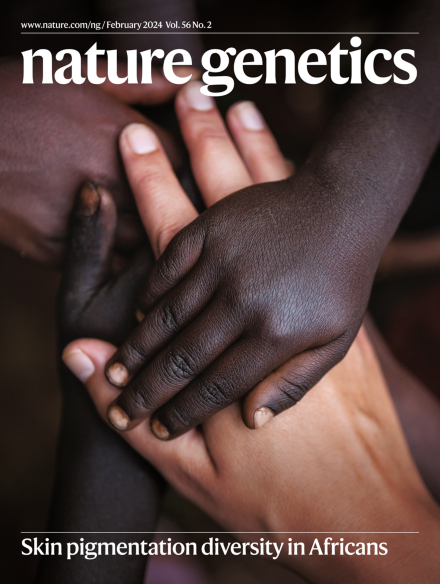
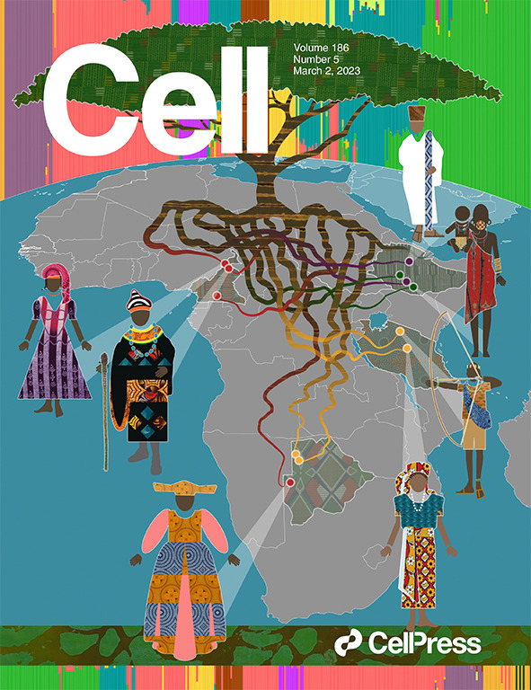
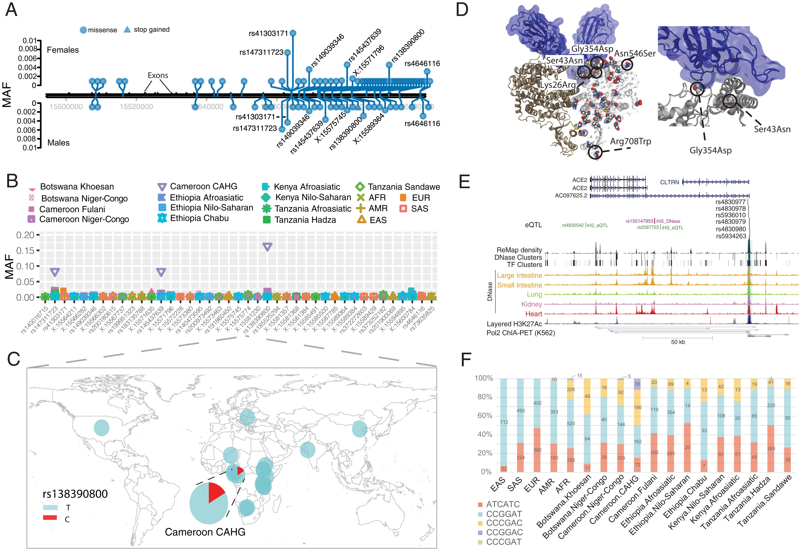
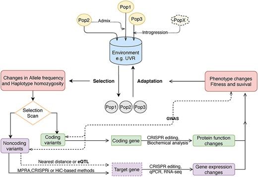
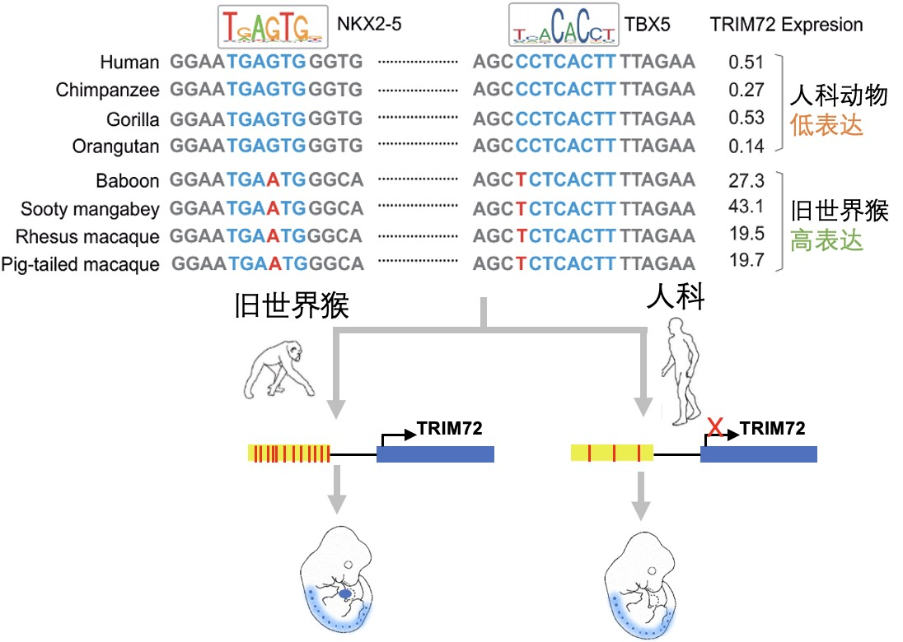
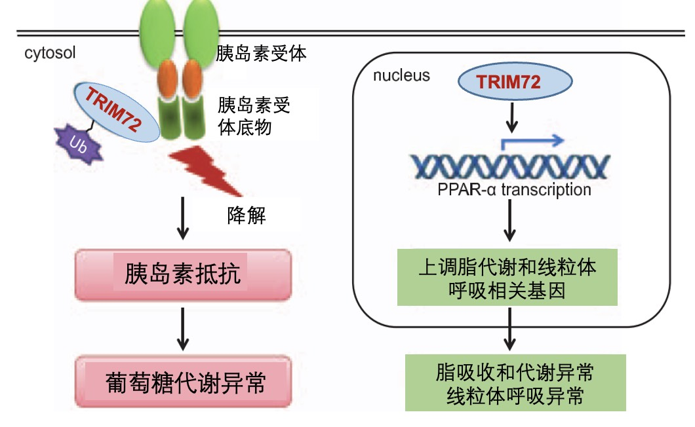

Publications

Nature Genetics. 2024.
PMID: 38238631 |
DOI: 10.1038/s41588-023-01643-0
Nature Genetics. 2024; 56(2):258-272.
PMID: 38200130 |
DOI: 10.1038/s41588-023-01626-1

Cell. 2023; 186(5):923-939.
PMID: 36868214 |
DOI: 10.1016/j.cell.2023.01.042

Proceedings of the National Academy of Sciences. 2022; 119(21):e2123000119.
PMID: 35580180 |
DOI: 10.1073/pnas.2123000119

Human Molecular Genetics. 2021; 30(R1):R88-R97.
PMID: 33438000 |
DOI: 10.1093/hmg/ddab007

Molecular Biology and Evolution. 2021; 38(7):2930-2945.
PMID: 33744959 |
DOI: 10.1093/molbev/msab083

Circulation. 2015; 131(9):795-804.
PMID: 25637627 |
DOI: 10.1161/CIRCULATIONAHA.114.012285
For a complete list of publications, please visit my Google Scholar profile.